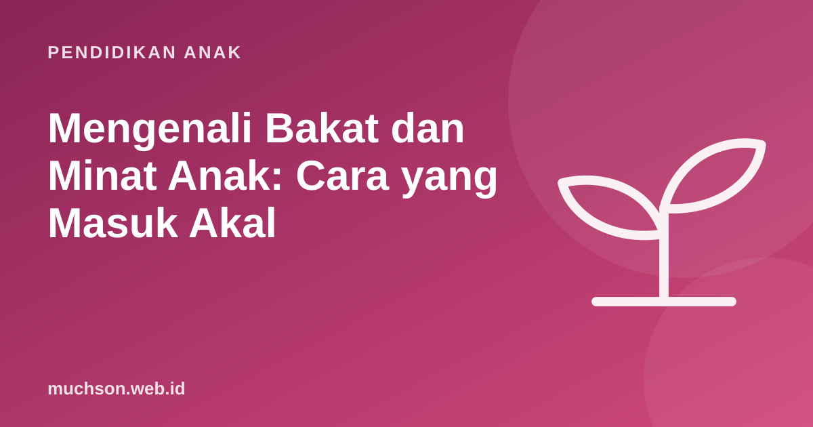

Beranda › Artikel › Pendidikan Anak
Pendidikan AnakMengenali Bakat dan Minat Anak: Cara yang Masuk Akal
Orang tua ingin tahu sejak dini: anak saya berbakat apa? Banyak tes bakat menjanjikan jawaban cepat. Penelitian tentang perkembangan minat memberi gambaran yang berbeda: minat dan kemampuan tumbuh dari pengalaman, dan sering baru terlihat jelas setelah anak mencoba banyak hal dengan sungguh-sungguh.

Bakat dan minat: dua hal berbeda
Banyak orang tua fokus mencari bakat, padahal untuk anak SD, minat seringkali menjadi petunjuk yang lebih berguna. Minat mendorong latihan, dan latihan membangun kemampuan. Anak yang sangat berminat pada sesuatu biasanya akan berlatih lebih banyak tanpa disuruh.
Bagaimana minat tumbuh
Psikolog pendidikan Suzanne Hidi dan K. Ann Renninger (2006) menggambarkan perkembangan minat dalam empat tahap:
| Tahap | Seperti apa | Peran orang tua |
|---|---|---|
| 1. Minat sesaat terpicu | Anak tertarik saat melihat sesuatu yang baru dan menarik | Sediakan banyak pengalaman baru |
| 2. Minat sesaat bertahan | Anak terus tertarik selama kegiatan berlangsung | Buat kegiatan bermakna dan sedikit menantang |
| 3. Minat pribadi yang muncul | Anak kembali ke topik itu atas kemauannya sendiri | Beri waktu, bahan, dan kesempatan bertanya |
| 4. Minat pribadi yang matang | Anak bertahan saat sulit dan mencari tahu lebih dalam | Hubungkan dengan mentor, komunitas, atau kursus |
Minat jarang muncul dalam bentuk jadi. Ia biasanya dipicu oleh pengalaman, lalu tumbuh bila didukung. Itulah kenapa mencoba banyak hal di masa SD sangat berharga.
Hati-hati dengan tes bakat
Tes bakat dan tes "kecerdasan majemuk" populer di kalangan orang tua. Beberapa memang dirancang dengan baik, tetapi banyak yang dijual tanpa dasar ilmiah yang kuat, termasuk tes sidik jari. Untuk anak SD, hasil tes apa pun sebaiknya diperlakukan sebagai salah satu informasi, bukan vonis. Minat dan kemampuan anak bisa berubah banyak dalam beberapa tahun.
Jurnal pengamatan orang tua
Cara paling andal mengenali minat adalah mengamati anak dalam waktu yang cukup lama. Catat sebulan, lalu cari polanya:
Pertanyaan keempat, "kegiatan apa yang tetap ia lanjutkan saat sulit", paling penting. Ketekunan saat sulit adalah tanda minat yang mulai matang.
Berikan banyak pintu untuk dicoba
| Ranah | Contoh pintu |
|---|---|
| Seni | Menggambar, musik, tari, teater |
| Gerak | Renang, sepak bola, bela diri, panjat |
| Sains dan alam | Berkebun, mengamati serangga, eksperimen dapur |
| Bahasa | Menulis cerita, membaca, berdebat |
| Teknologi | Coding, merakit, robotik, desain digital |
| Sosial | Pramuka, kegiatan relawan, organisasi kelas |
Coding menarik sebagai pintu karena memadukan beberapa ranah: seni (animasi), bahasa (cerita interaktif), logika (game), dan sains (simulasi). Anak yang mencobanya bisa menemukan bagian mana yang paling ia sukai. Dua pelajaran gratis di PixelKode bisa menjadi salah satu pintu yang dicoba, lalu amati dengan jurnal di atas.
Tanya jawab
Bagaimana cara mengetahui bakat anak?
Apakah tes bakat anak akurat?
Usia berapa bakat anak terlihat?
Perlukah anak fokus pada satu bidang sejak SD?
Sumber dan bacaan lanjut
- Hidi, S., & Renninger, K. A. (2006). The four-phase model of interest development. Educational Psychologist
- Ryan & Deci (2000). Self-determination theory and intrinsic motivation
- Resnick, M. Lifelong Kindergarten Group, MIT Media Lab